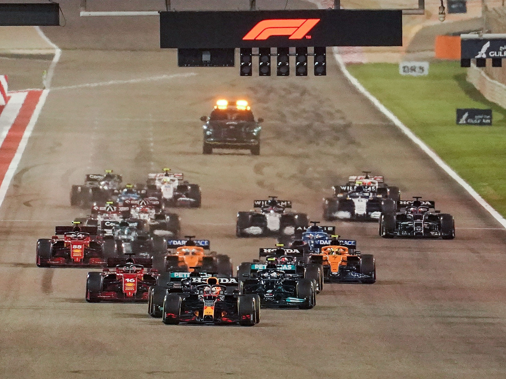
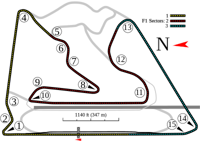

NAVEGUE
Home
Pilotos
Calendário/Tabela
Grand Prix
Construtoras
Últimas Notícias
GP do Bahrein
SOBRE
A pista do Bahrein é um circuito de corrida localizado no Bahrein, no Oriente Médio, que é conhecido por sediar o Grande Prêmio do Bahrein de Fórmula 1 desde 2004. A pista tem um comprimento de 5,412 km e apresenta uma série de curvas de alta velocidade, como a curva 4 e a curva 11, bem como algumas curvas de baixa velocidade, como a curva 1. A pista também possui uma reta longa, que oferece oportunidades de ultrapassagem emocionantes. A pista do Bahrein é considerada uma das pistas mais modernas e bem equipadas do calendário da Fórmula 1, com instalações de última geração e iluminação artificial para permitir corridas noturnas.
Circuitos Utilizados

INFORMAÇÕES DA CORRIDA

Localização
Sakhir, Barém
Voltas
57
Percurso
5.412 km
Total
308.238 km
Curvas
15
Pole
Lewis Hamilton
Anos Disputados
19
Última Disputa
2023
Maior vencedor
Lewis Hamilton
Última Corrida - Pódio
Max Verstappen